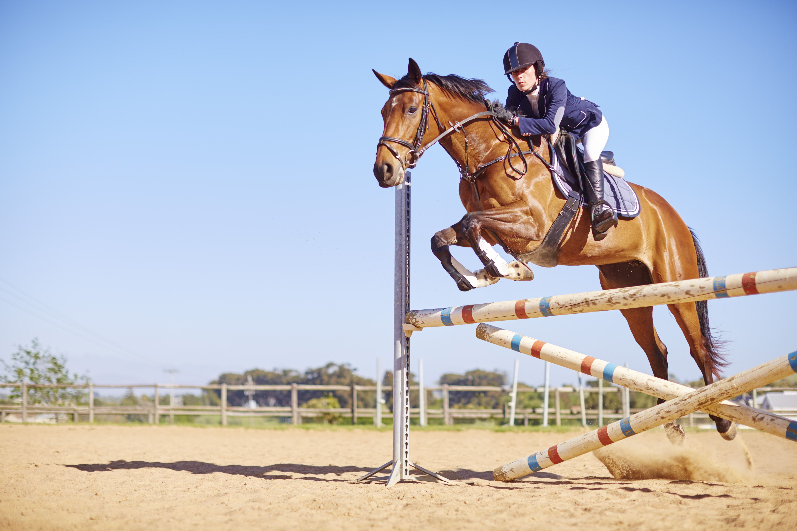
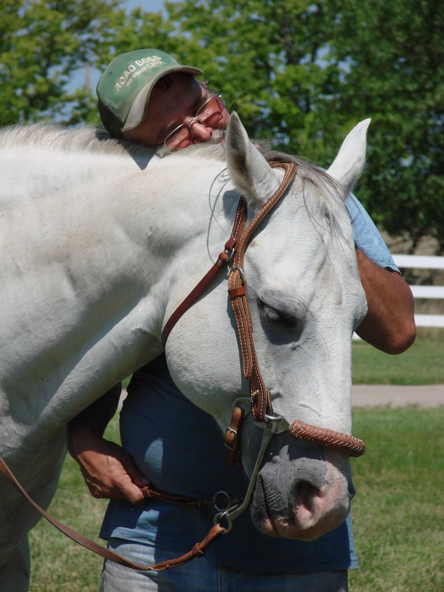
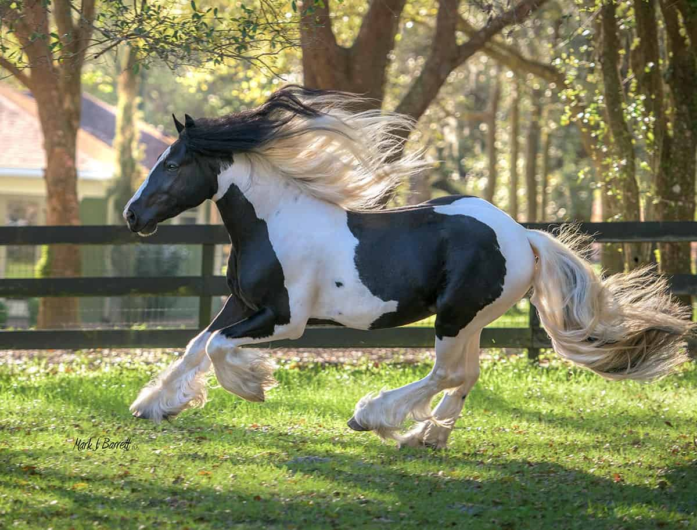

Riding · Horsemanship · Connection
More Than Riding — A Partnership With Horses
Equestrianism is a quiet, ongoing dialogue between rider and animal. The horse is not a vehicle but a partner, and building that partnership takes patience, consistency, and time.
Explore the Sport

Philosophy
The Philosophy of Horsemanship
True horsemanship is built on communication, not control. Horses are sensitive, social animals, and riding well means learning to give signals they understand while also reading what they communicate back.
"The horse is not a vehicle but a partner."
Trust builds slowly, through calm and consistent handling both on the ground and in the saddle. There is no shortcut for it — and that is exactly what draws so many people to this hobby for life.

Discover
Explore Breeds & Riding Styles
From the elegance of dressage to the ease of a trail ride, every rider finds their own discipline. Learn about horse breeds, Western and English traditions, essential tack, and how long it really takes to become a confident rider.
Discover the SportPrinciples
What Every Discipline Has in Common
No matter the style or discipline, a few principles come up again and again.
Communication
Riding well means giving signals the horse understands — through weight, leg, rein, and voice — and learning to read what it communicates back.
Trust
Horses are prey animals. They need to feel safe with a rider before they relax and work willingly, and that trust is earned slowly.
Patience & Consistency
Horses learn through repetition. They respond better to a predictable rider than a technically skilled but inconsistent one.
Balance & Position
A rider who sits balanced and relaxed moves with the horse instead of against it, making communication clearer.
Care & Responsibility
Looking after a horse means understanding its nutrition, veterinary needs, and daily living conditions — on top of the riding itself.
Lifelong Learning
Even riders with decades of experience say they're still learning. Every horse is different, and every ride brings something new.
Find a local stable, book your first lesson, and see what the horses have to teach you.